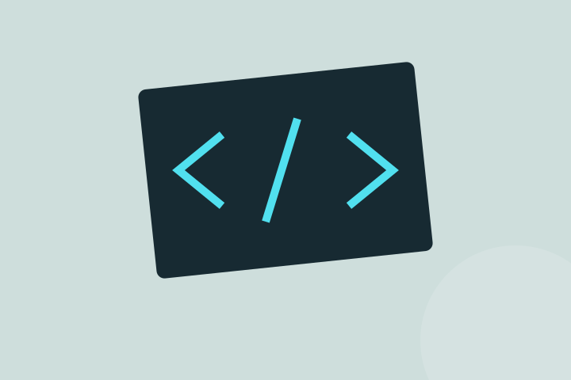
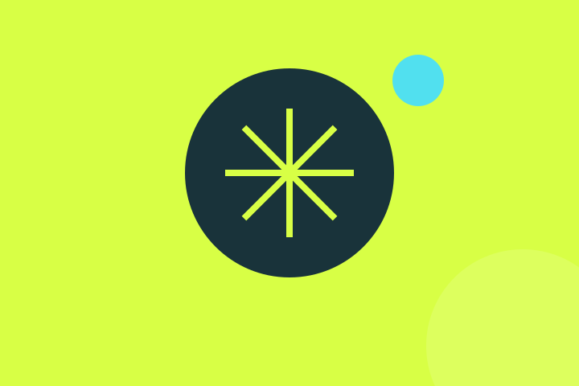
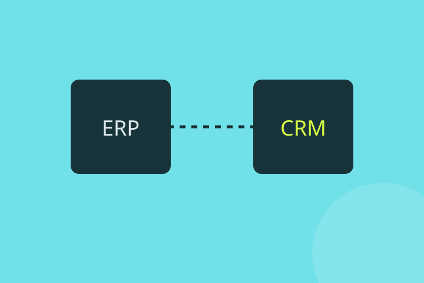
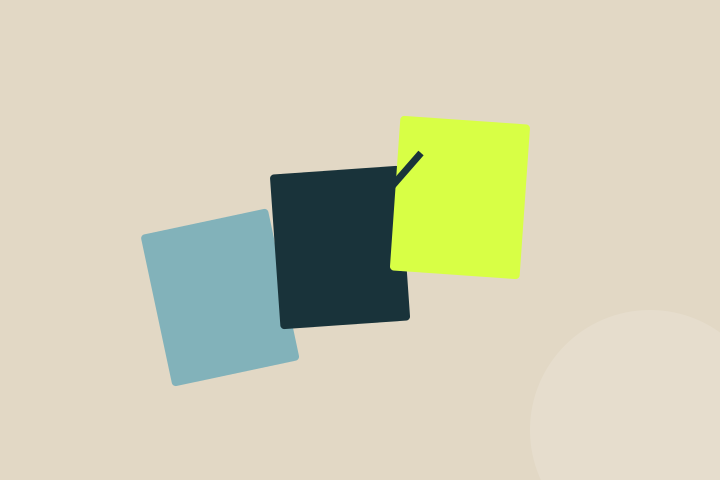

Software
Software su misura: quando ha davvero senso?
Tre segnali per capire se adattare uno strumento o costruirne uno intorno al tuo lavoro.
Leggi di piùSoftware, intelligenza artificiale e lavoro quotidiano. Domande concrete, scelte da discutere e cose da imparare insieme.
Idee e approfondimenti su software, dati e intelligenza artificiale nel lavoro quotidiano.

Software
Tre segnali per capire se adattare uno strumento o costruirne uno intorno al tuo lavoro.
Leggi di più
Intelligenza artificiale
Come scegliere un primo caso d’uso senza partire dall’ultimo strumento uscito.
Leggi di piùDati
Definizioni condivise e fonti affidabili vengono prima del grafico perfetto.
Leggi di più
Integrazioni
Da dove partire quando le persone ricopiano le stesse informazioni in più sistemi.
Leggi di più
Metodo
Il percorso tra un prototipo convincente e uno strumento che viene usato ogni giorno.
Leggi di più
Cloud
Rilasci, costi e recupero: le domande da fare prima di scegliere l’infrastruttura.
Leggi di più